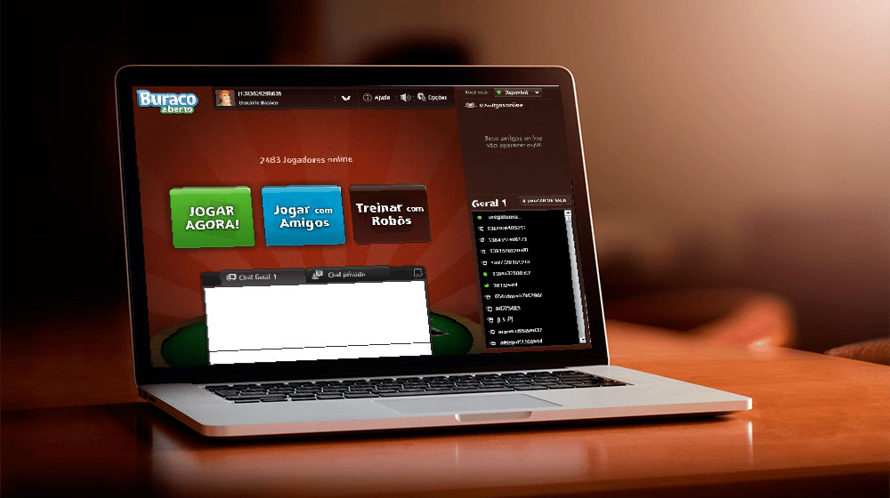

- Home
- >
- Portfólio
- >
- Buraco Jogatina
Buraco Jogatina
Descrição do projeto
O aplicativo Web multi-player Buraco on-line do Jogatina é um dos passatempos preferidos dos brasileiros. Com mais de 4 milhões de brasileiros cadastrados, nele você pode convidar amigos para jogar, usar o chat do jogo e se divertir com até 4 pessoas ao mesmo tempo.
 Desenvolvi todo o lobby, sistemas de chat da aplicação com gerenciamento de estado do jogador (online, ocupado e offline),
lidando com gigante fluxo de dados sumultaneos e em tempo real.
Gerenciamento de animações dos objetos UI, transições de popups e telas.
Desenvolvimento de componentes avançados absolutamente do zero sem auxílio de frameworks de terceiros.